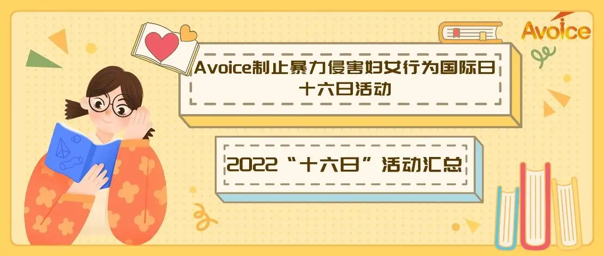
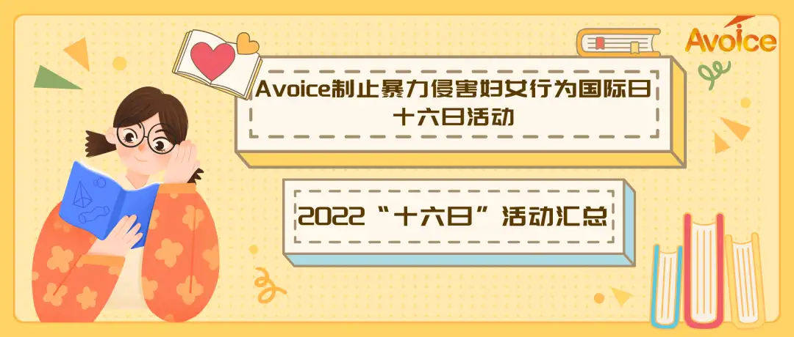
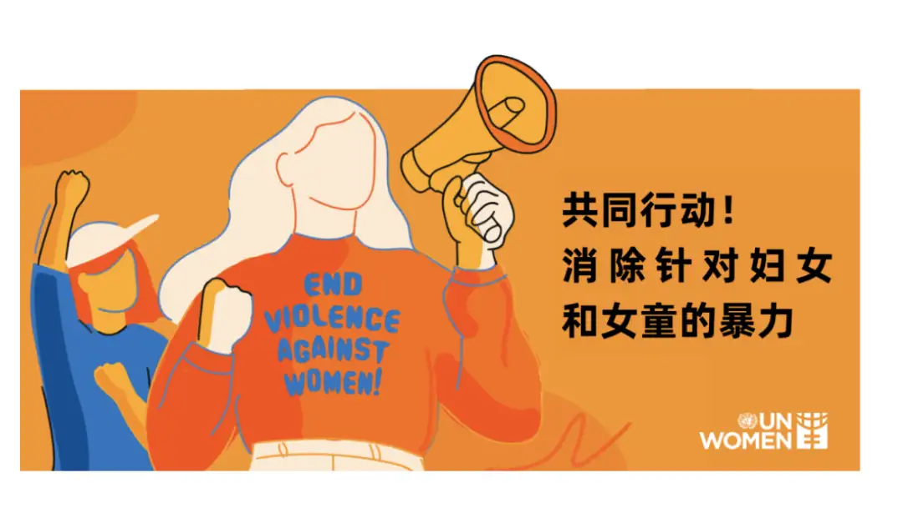
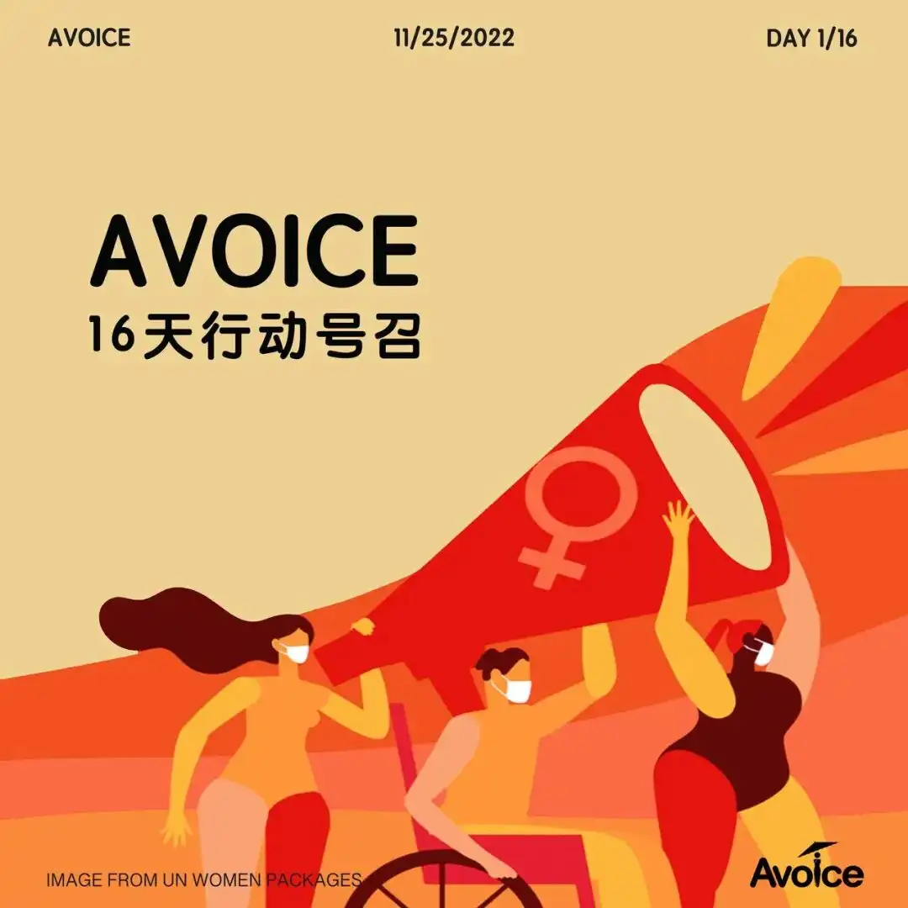
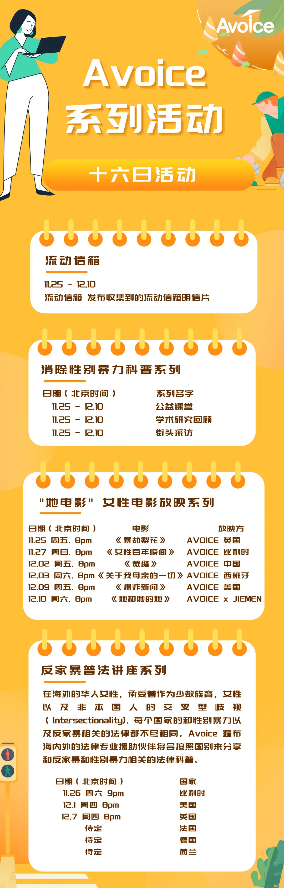
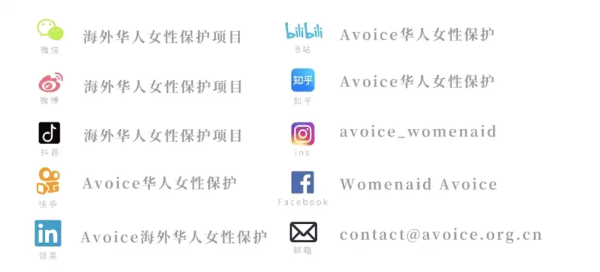

消除性别暴力十六日行动

一年一度的联合国消除性别暴力“16日行动”即将到来。今年的“16日行动”以“团结起来： 采取行动结束暴力侵害妇女和女童行为” (Activism! UNiTE to end violence against women and girls) 为主题，呼吁更多人加入消除性别暴力的行动当中，支持全球妇女和女童保障其权益。
每年的11月25日是联合国“制止暴力侵害妇女行为国际日”。消除性别暴力“16日行动”从每年的这一天开始，一直持续到12月10日“国际人权日”结束。“16日行动”旨在调动社会、大众、政府和联合国机构，扩大影响力，鼓励人们采取行动消除性别暴力。
根据联合国妇女署在COVID-19大流行期间，于全球13个国家开展的最新性别暴力调查报告，近二分之一的女性都表示COVID-19大流行以来，自己或其认识的女性都遭受了性别暴力，因为性别暴力经历，她们精神和情绪压力增加的可能性会显著提高。调查结果还显示，因为大流行之后家庭内部冲突有所增加，约四分之一的女性在家中都感到不安全，身体虐待是主要原因之一。而家门之外，性别暴力风险也未曾远离。40%的受访者都表示COVID-19爆发以来，她们夜晚独自出行感到更加不安全。
虽然性别暴力事件非常普遍，但越来越多的证据都证明来自社会的干预可以起到较好的预防效果，妇女领导的社会组织和其他致力于预防和回应性别暴力的社会组织在其中扮演重要角色。几十年来，这些社会组织的不懈努力将“针对妇女和女童的暴力（VAWG）”从全球议题的边缘推到中心位置，使其成为全球妇女权利议程的核心要素。但它们的贡献和影响力常常被低估，甚至被忽视。有时因为当地民众对性别暴力议题和新政策的认知不足，这些社会组织和服务提供者的工作也面临挑战。
由于缺乏资金和人力资源，这些组织推动下形成的妇女权利保障政策和法条在很多国家的实施情况尚不理想，施暴者仍然可以免于惩罚。鉴于这些严峻事实，为了确保没有一个妇女和女童掉队，我们需要继续行动，看到这些社会组织和个体的贡献，给予他们更多支持，并成为其中一员。
消除性别暴力十六日行动

在今年联合国倡导的“消除性别暴力16日行动”中， Avoice（海外华人女性保护项目）将会在全平台（微信，小红书，微博，Instagram）联合 妇女领导的社会组织，其他致力于预防和回应性别暴力的社会组织，倡导性别平等的社会组织，更多男性以及幸存者，进行一系列线上、线下的关于性别暴力的科普以及倡导活动，期待你的参与和互动。
橙色是“16日行动”主题色，它象征着对性别暴力的警惕，以及性别暴力可能带来的伤害和代价。温暖明亮的橙色也象征着希望、对受害者的鼓励、以及对远离暴力威胁的未来社会的向往。
#2022.11.25
Avoice “她电影” 女性电影放映系列之一：《暴劫梨花》The Accused
流动信箱倡导：为家暴和性别暴力幸存者写明信片，传递温暖，鼓励与力量
#2022.11.26
Avoice 反家暴法律科普系列讲座之一：比利时反家暴法律讲座
Avoice 影响力报告发布
#2022.11.27
Avoice “她电影” 女性电影放映系列之二：《 她说：女性百年瞬间》
#2022.11.28
Avoice 消除制止性别暴力街头系列采访发布
#2022.12.01
Avoice 反家暴法律科普系列讲座之二：美国反家暴法律讲座
#2022.12.02
Avoice “她电影” 女性电影放映系列之三：《裁缝》 Dressmaker
#2022.12.03
Avoice “她电影” 女性电影放映系列之四：《关于我母亲的一切》 Todo sobre mi madre
#2022.12.05
Avoice 心理科普系列课程发布：联手心理专家张春老师，李戈洲老师，社会工作专家，以及专栏作家haha老师
李戈洲老师： Yeshiva University心理咨询硕士毕业，纽约州执证心理咨询师（LMHC), 受训于Milton Erickson Foundation 和 William Alanson White Institute。曾任纽约市Community Counseling and Mediation心理咨询诊所主任(clinical director)及督导（supervisor）
张春老师：《一生里的某一刻》作者，畅销书作家，心理咨询师，现居厦门
Haha老师：加州州立大学洛杉矶分校传播学研究硕士毕业，设计师及专栏作者，现居美国。在千千·橙雨伞等平台发表性别平等教育类图文5年+
#2022.12.07
Avoice 反家暴法律科普系列讲座之三：英国反家暴法律讲座
#2022.12.09
Avoice “她电影” 女性电影放映系列之五：《爆炸新闻 》Bombshell
#2022.12.10
Avoice “她电影” 女性电影放映系列之六：《她和她的她》 Shards of Her

合作伙伴介绍
《姐们》官方公众号：姐们 JIEMEN
《姐们》源于女性，始于女性，忠于女性，我们希望能从女性视角出发，反观社会热点和流行文化，从线上端给予女性更多的支持和空间。
在性别这样复杂的议题上，我们能做的只有去表达，女性主义因为有思想与交流才有力量。《姐们》希望给女权主义者带来思想交流，为时者带来力量，为来者守住阵地。女性支持女性。
十六日活动参与方式
感兴趣参与观影会，科普讲座，以及其他十六日活动的小伙伴，请扫描以下二维码进入活动群。
#全平台信息

撰稿 I 若琪
排版/封面/海报 I 戴翰林
信息来源 I 联合国妇女署官方媒体
& Avoice 往期研究和科普文章